Renseignements policiers
Réponse au député UMP Georges Mothron, concernant l'attitude raciste d'un membre
de la CRS 43

En Mars dernier, nos camarades infiltraient un groupe facebook nommé « non à la fermeture des CRS », crée par des CRS et leurs proches suite à d'éventuelles suppressions de postes. Au bout de plusieurs jours et après avoir effectué des vérifications minutieuses, 2 membres très actifs de ce groupe ont été numériquement traqués, leurs identités vérifiées, leurs attitudes décryptées et chacun de leur message passé au crible. Après plusieurs semaines d'observation, il fut constaté que des photographies prises par des CRS eux mêmes et cela pendant leur service, montrèrent des individus interpellés à Sevran accompagnés d'un racisme notable envers une mère et son enfant d'origine africaine.
Ces photos ont été prises par la CRS 43 de Chalon-sur-Saône, titularisé dans le 93 à cette époque. Le CRS diffuseur de ces photos et tenant les propos moqueurs, racistes et injurieux est le brigadier Franck MISSOUT. Vingt-quatre heures après la diffusion par la presse de cette xénophobie policière, Franck MISSOUT a supprimé son compte et les photos qui vont avec.

Photot extraite du Facebook de Franck Missout-CRS 43

Franck Missout à Sevran

Propos prouvant la présence de Franck écrit par lui-même
Six mois après les faits, Franck Missout est toujours en poste à la CRS 43 de Chalons-sur-Saône et rien n'a bougé, aucune sanction n'est tombée. Franck continue d'exercer.
L'UMP, parti que Georges Mothron représente, s'est faite la destructrice de toute forme de déontologie au sein de la police nationale. En banalisant l'impunité et en créant une police placée au rang d'intouchable, vous, hommes et femmes de pouvoir en avez perdu le contrôle total.
Vous les protégez, nous saurons les identifier.
Catégorie:
CALAIS
PAF, CRS, DCRI, Police nationale, la lutte continue
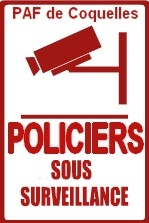
Jamais nous ne lâcherons, jamais nous n’arrêterons de filmer vos actes. Nous dénoncerons de toutes nos forces les violences commissent par PAF, CRS et police nationale à l'encontre des migrants présents autour et au sein de Calais.
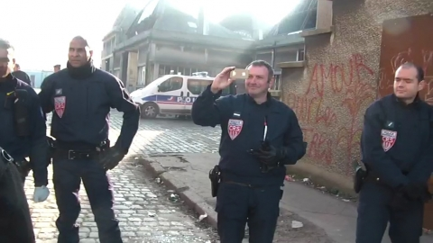
CRS raflant au squat Pagniez
Ces derniers mois, la PAF de coquelles a rompu mais n'a pas cédé. Malgré les procès remportés à l'encontre de 2 policières, les exactions continuent et ne s’arrêtent pas. Et ce n'est pas le défenseur des droits qui fera évoluer cette situation insupportable. En diffusant les vidéos de la honte nous avons montré la manière dont Calais s'est transformé en véritable laboratoire de lutte contre l'immigration. Un laboratoire ou CRS et PAF s'entrainent à chasser le migrant, à l'humilier, à le torturer psychologiquement. Calais possède sans doute la PAF la plus violente de France.
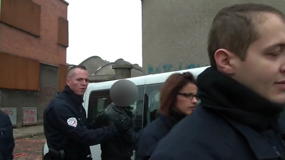
PAF de Coquelles arretant un migrant
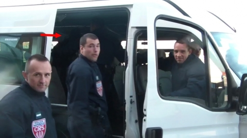
CRS heureux après l'arrestation d'un migrant (flèche rouge)
Depuis 2003, des personnes on entrepris un véritable travail de renseignements afin de protéger au maximum les migrants des exactions policières. Ce travail, nous le poursuivons aujourd'hui avec la plus grande conviction.
De nouvelles vidéos seront diffusées, soyez en sur....
Catégorie:
PARIS-BELLEVILLE
Portrait du N°2 de la BST
A Belleville, la chasse aux pauvres est devenue une attraction pour la BST, une occupation. Tous les jours, des personnages récurrents de cette unité interviennent pour l’ouverture de la chasse. Parmi eux, le numéro 2 de la BST. En l'absence de son supérieur Roland Toineau, c'est lui qui mène la meute au combat.
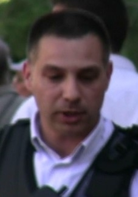
Numéro 2 de la BST de Belleville
Ce Brigadier chef d'environ 45 ans, à l'identité non connu, est sans doute l'un des plus agressifs de la BST. Pour annoncer son arrivée au sein du marché, tonfa greffé à la main, l'homme mène une guerre psychologique en tapant sur les poteaux de signalisation du quartier. A la simple perception du bruit sourd et violent, les biffins fuient le marché abandonnant au passage certaines de leurs affaires. Mais l'homme ne s’arrête pas la, si il peut choper du pauvre, il chope et il n'hésite pas à cogner et foutre en garde à vue.
L'homme à la chasse
L'homme a une particularité, il possède une mini caméra à l'oreille lui permettant de réaliser un fichage en direct, rapide, et d'enregistrer le comportement des biffins.
L'homme et sa caméra oreille
Il est recommandé d'être particulièrement vigilant avec cet individu peu commode, et pour qui le mot misère est absent de son vocabulaire.
Catégorie:
Communiqué
A l'attention des syndicats de police
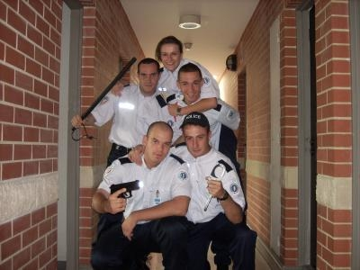
C'est sans surprise que nous constatons que le second syndicat de policiers, ALLIANCE, a réagi à la création du site internet copwatch nord-idf. Alliance tente une stratégie de communication que nous connaissons que trop bien. D'abord on fait passer le site pour anti- flic puis on fait croire que les familles de policiers vont être mises en danger. Tout cela est une belle mise en scène mais il faudrait parfois penser à évoluer. Ce site ne diffuse et ne diffusera jamais une seule donnée concernant les familles des policiers et comme nous l'avons dit précédemment, toutes ces informations récoltées sont basées sur un travail de terrain, d'observation, de contre-renseignement mais aussi de ruses. Nous appliquons les mêmes méthodes que vous, à la seule différence que vous, vous détruisez des familles entières. Avez vous réagi à la diffusion de policier de la PAF de Coquelles tabassant les migrants de Calais???NON.
Pendant des mois nous n'avons rien dit, mais alors rien, mais qu'est ce qu'on a bossé sur vous. Et des choses, on va vous en montrer....
Les méthodes anglo-saxonnes en matière de lutte contre l’oppression et la répression des forces de sécurité sont sans doute les meilleurs en la matière. Les polices états-uniennes subissent le copwatch depuis 20 ans et les résultats ont été sans équivoque. En conséquence et cela dans un futur proche, nous dévoilerons de nouvelles vidéos sur la répression calaisienne à l'encontre des migrants et des activistes. A Lille, une enquête sur les relations entre la police Lilloise, supporter fasciste du losc et groupe néo nazis de la maison flamande sera divulguée après 8 mois de recherches. Enfin à Paris, c'est la chasse aux pauvres et toutes les violences commises depuis des mois que nous diffuserons. Nous conseillons aux syndicats policiers de mesurer leur propos et leur menace au vu de ce que nous possédons. Nous allons montrer qui vous êtes réellement et la répression quotidienne que vous faites subir à la frange la plus pauvre de la population.
Nous étendrons le copwatching, nous vous l'imposerons et vous le subirez.
Des individus
Catégorie:
PARIS: chronique d'une capitale en guerre
OBSERVATIONS et RECENSEMENTS des déploiements et violences policières
PRINTEMPS 2011
Depuis plusieurs mois, des personnes ont attentivement étudié le comportement et le déploiement des forces policières dans la capitale. Discrètement et cela par volonté, des centaines de policiers ont été passés au crible, à des endroits différents et toujours là où la répression fonctionne avec grande force.
LE METRO (BARBES)
Le métro parisien connait une fréquentation de plus en plus olé olé. La faune qui le compose est équipée d'uniformes de maintien de l'ordre. Cette faune c'est la gendarmerie mobile. Aujourd'hui, dans le métro parisien, en plus des bidasses, la sécurité RATP et la police nationale, les gendarmes mobiles peuvent tabasser et contrôler les titres de transport. C'est la grande chasse aux fraudeurs, roms et sans pap
Voici sur ces photos, les gendarmes mobiles à l’œuvre
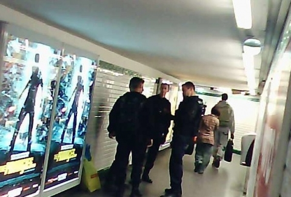
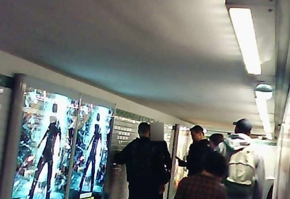
LA CHASSE AUX MIGRANTS TUNISIENS
La préfecture de police de Paris à entrepris de construire un Calais bis sur Paris avec la chasse aux migrants et l'expulsion des squats. Ces derniers temps, les révolutions arabes voient affluer un grand nombre de migrants dans la précarité la plus complète. Malgré tout et sans aucun étonnement, la police nationale teste son matériel et ses unités à une sorte d'entrainement réaliste grandeur nature. Voici un exemple du déploiement de force mis en place lors de l'expulsion des tunisiens rue Bolivar.
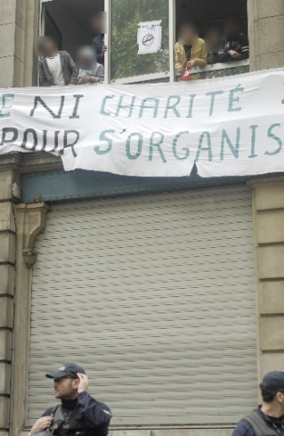
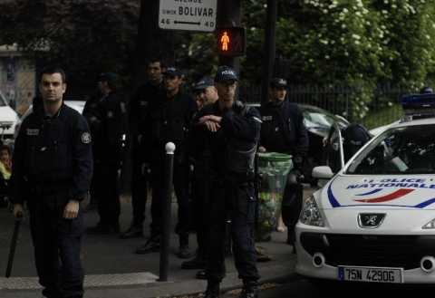
déploiement massif des compagnies de sécurisation et d'intervention (CSI),
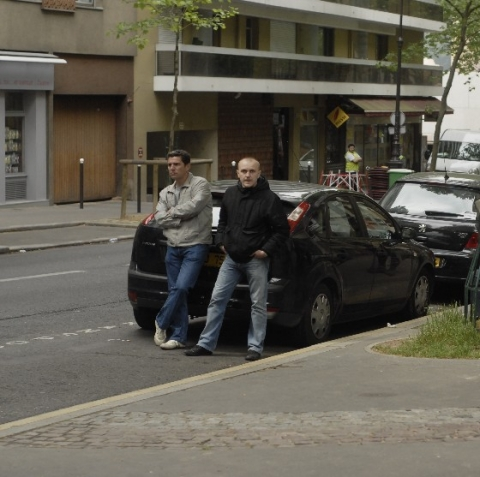
de flics en civils,
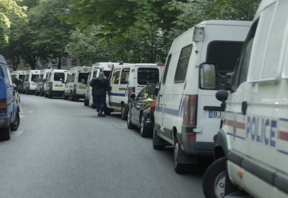
de dizaines de cars de CRS
LA CHASSE AUX PAUVRES DE BELLEVILLE
Belleville est devenu un mini laboratoire sécuritaire, un quartier ou l'on broie de l'humain, ou l'on défonce du pauvre, ou l'on nettoie la misère à coups de flash ball et gazeuses. Il n'y a pas une semaine ou la brigade spécialisée de terrain (BST) ne commette des violences. Des observations et vidéos ont été effectuées sur le marché des biffins et seront prochainement diffusées. En voici quelques extraits.
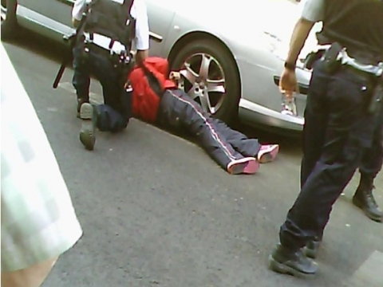
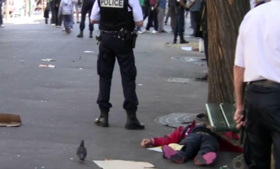
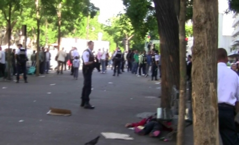
Homme gazé puis laissé à l'abandon à Belleville lors d'une purge au marché des biffins par la BST de Roland Toineau.
SURVEILLANCE, INFILTRATION et DESTRUCTION DE MANIFESTATIONS
A Paris, manifester est devenu un danger permanent. Soit tu es passé à tabac par les flics ou alors tu te fais embarquer dans un bus avec des centaines d'autres personnes. Michel Gaudin et sa préfecture de police font tout pour dissuader les gens de manifester. Elle sait laisser le terrain ouvert à une manifestation fasciste le 9 Mai , mais refuse toute opposition de masse à son état raciste et xénophobe actuel.
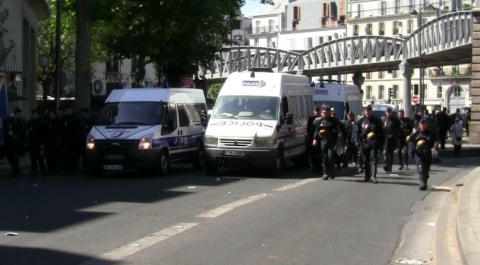
Déploiement en masse de la CRS 40 de Dijon à l'arrière d'une manif
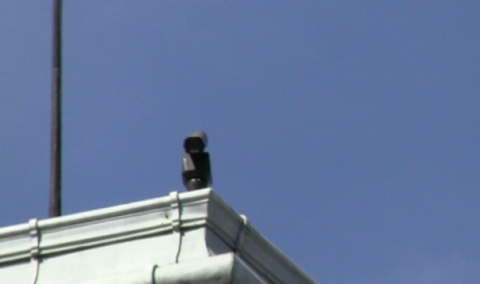
Fichage systématique avec caméra rotative depuis les toits des bâtiments publics.
L'infiltration de policiers en civils avant, pendant et après les manifestations a été le fruit d'un travail minutieux. Le résultat est consternant. Lors de certaines fins de manifestation, les policiers en civils sont presque aussi nombreux que les manifestants.. Les infiltrations effectués par des policiers de la BAC et GSP ont pour unique intérêt d'entrainer la déstabilisation de celles-ci.
Les photos suivantes montrent comment en infiltrant les fins de manifestation, les policiers en civils agissent en véritable milice politique.
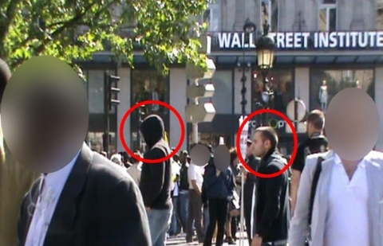
Infiltration en fin de manif au travers des Compagnies d'Intervention
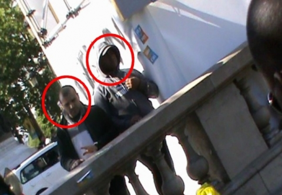
Visualisation et prise de température de la tension régnante ou non dans la manifestation
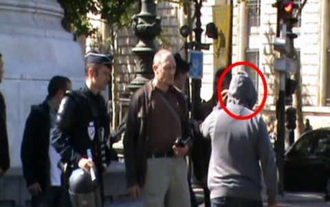
Aucune tension donc extraction
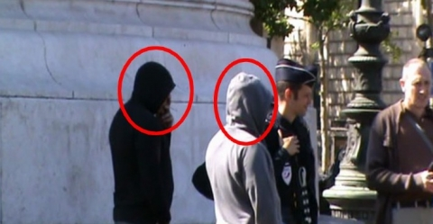
Rapport de situation auprès de la DCRI et la DOPC

Reprise d'un comportement dit « normal »
Suite à ces observations, nous pouvons conclure et ce n'est pas nouveau, que Paris se dote de techniques militaro-sécuritaires. La présence en masse de policiers en civils n'est pas anodine. L'état est en pleine traque d'une sorte d'ennemi intérieur fictif, mais aussi de l'immigré et du pauvre créant une bombe sociale prete à exploser au moindre fait. Cette paranoïa ambiante n'est pas pacifique et créee de multiples tensions au sein des quartiers les plus pauvres. Barbès, Château rouge, Belleville et Couronnes sont en premières lignes. Il est impératif pour Paris et sa banlieue d'accentuer rapidement la multiplication des groupes exerçant comme mode d'action le copwatch. La connaissance parfaite de l'ennemi policier doit aboutir par escarmouche à un pourrissement efficace du bloc sécuritaire.
Catégorie:
Communiqué de lancement
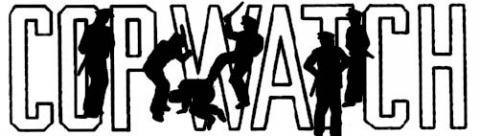
Nous avions promis, nous avons tenu parole...
En décembre 2010, une polémique digne d'une comédie est née suite à la diffusion d'une dizaine de photos de policiers en civil parisiens. Le syndicat Alliance, à la pointe de la contestation policière, par l'intermédiaire de son secrétaire général Jean Claude Delage, s'en est allé pleurnicher auprès du ministre de l'intérieur de l'époque Brice Hortefeux, qui a immédiatement porté plainte. Comme de bien entendu, une enquête judiciaire a été ouverte (voir document en bas de page) à l'encontre de la pratique du COPWATCHING. Cette technique de lutte qui consiste à observer, répertorier et empêcher les violences policières a été rapidement criminalisée et réduite par les médias à une vulgaire réaction « antiflic ». En France, filmer les violences et dérives de la police est aussitôt pour eux devenu un délit.
Aujourd'hui, après des mois d'élaboration et parce qu'il était nécessaire de le faire, le premier site dédié au copwatching en France est né . Regroupant les données collectées dans un premier temps sur trois agglomérations du Nord de la France, Paris, Lille et Calais, ce site est consacré à la diffusion de renseignements précis sur l'ensemble des forces de l'ordre par le biais d'articles, d'images (photos et vidéos), mais aussi et surtout de trois larges bases de données sur la police. Ces bases de données, accessibles par tous, permettront à toute personne victime d'abus, d'humiliations ou de violences de la part des flics, d'identifier le ou les policiers auteurs de ces actes. Désormais, il ne sera plus question de quelques photos publiées de façon hasardeuse sur des sites dispersés, mais une mise en commun de dizaines de témoignages et d'images permettant d'avoir une vue d'ensemble des pratiques policières.Un accent tout particulier sera mis sur la surveillance des policiers en civil qui, sous couvert d'anonymat ont tendance à se comporter comme une milice politique digne de certains régimes autrement plus totalitaires. De Tunis à Millau, en passant par Téhéran, Paris et Athènes, les milices en civil ont retrouvé leur place dans les rangs de la répression d'État. Face à la montée du racisme et dans la prévision d'une nouvelle victoire idéologique de l'extrême-droite, ce site veut anticiper les futures violences de flics confortés par un pouvoir toujours plus fascisant. Par expérience, nous savons que le Front National et ses rejetons identitaires constituent un vivier pour beaucoup de flics, qui n'attendent que le moment où le pouvoir, qu'il soit sarkozyste ou lepeniste, leur lâchera la bride..
La recrudescence des actes violents commis par les forces de l'ordre, en toute impunité le plus souvent, ne nous a guère laissé d'autre possibilité. Toute compassion ou toute empathie pour les flics est exclue de ce site: nous considérons que les policiers ou les militaires, si tant est qu'ils ont un cerveau pour penser, savent dans quoi ils sont engagés et le font en toute conscience. Et la pénibilité de leur tâche n'excuse en rien leurs dérives autoritaires et violentes. Ces derniers temps, des vidéos montrant les dérives de la Police Aux Frontières (PAF) de Coquelles(Calais) envers les migrants a atteint le comble de l'ignominie et a considérablement renforcé notre volonté de combattre cette machine répressive et l'idéologie nauséabonde qui l'accompagne.
Après avoir infiltré des forums glorifiant la police nationale et des groupes facebook policiers, nous avons pu voir à quel point la xénophobie, les liens intimes avec les milieux néo-nazis et la diffamation atteignent des sommets, il nous est apparu indispensable de pointer du doigt ces attitudes malsaines et infantiles dans la police. Il nous a semblé crucial de démontrer que cette tendance est directement responsables des abus qui se multiplient, et qui peuvent amener des personnes à êtres mutilées ou assassinées par des tirs de flashball ou de taser, intimidées, humiliées, harcelées sexuellement ou frappées en garde-à-vue, par des policiers toujours plus confortés dans leur sentiment d'impunité.
Nous n'hésiterons pas à user de termes sévères à l'égard de la Police et de la Gendarmerie, car nous considérons ces institutions comme la fosse commune de l'humanité, le charnier de l'évolution, la mise à mort quotidienne de la déontologie et de l'éthique. Nous serons sans équivoque.
Ce site est véritablement à la disposition de toute personne ayant été témoin ou ayant subi la répression policière. Les informations qui nous seront communiquées seront vérifiées scrupuleusement et confrontées à d'autres témoignages si nécessaire, avant d'être diffusées.
La police n'a pas été créée pour protéger la population, mais pour la mettre au pas. Elle est un outil au service du Pouvoir, pour empêcher toute velléité de révolte et la tuer dans l'œuf, pour imposer un ordre social protégeant les élites et le système qui les engraisse.
Policiers, nous vous identifierons tous un-à-un,
Que votre impunité trouve une fin...